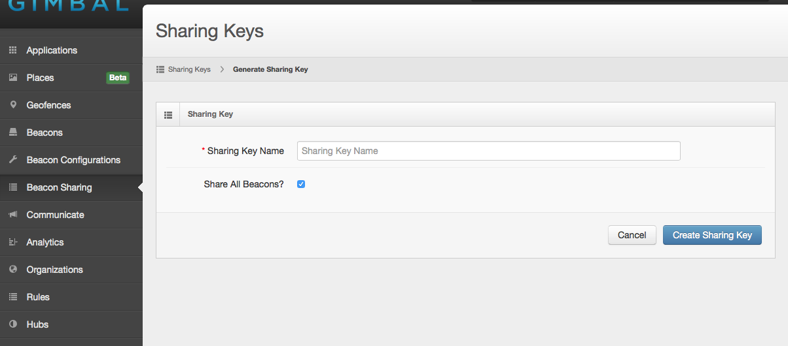

Based on Bluetooth Low Energy (BLE) beacons that provide finer grain proximity context.
Gimbal Proximity is currently available for iOS™ and is supported by all iOS™ devices that support BLE. This includes iPhone 4s or later, iPad 3rd gen and later, and iPod 5th gen and later. It also supports both 32-bit and 64-bit architecture.
Gimbal Proximity is now available for Android™ in Beta and is supported only on Android™ devices that support Android release version 5.0 and above.
Important Support for versions 4.4.3 and 4.4.4 can be enabled on Gimbal Manager.
The Gimbal Proximity Beacon is a Bluetooth Smart powered device that provides context about proximity and also ambient temperature. They can broadcast a secure code to ensure only users with the correct privileges can identify the beacon. The beacons are configured to transmit at a rate that optimizes reactiveness on applications and battery-life of the beacons. To see form factors and features please visit our store at https://store.gimbal.com
Note Across all documentation and SDKs the terms 'Beacon' and 'Transmitter' are interchangeableApplications that are using the Gimbal Proximity SDK are able to detect beacons which are in close proximity. Depending on the visibility level of the application and ownership of the beacon, more information about the beacon (including a given name, temperature and RSSI value) can be displayed. Below are some terms and information to give you a solid background on the Proximity Development Environment so you can provide a quality user experience.

A sighting occurs when a Proximity Enabled Application receives a BLE packet from a proximate beacon. Depending on the visibility of the application, the Gimbal Proximity SDK notifies the application of the sighting. It will contain information about the event such as: RSSI value, Beacon Name, Icon Url, Battery Level, and Temperature. The application can then react to the sighting by showing a coupon deal, displaying information about the current location, or giving a customized greeting.
The Gimbal Proximity SDK, in addition to notifying the application, also notifies the Gimbal Manager Servers periodically of all sightings. The Gimbal Manager Servers can then provide analytics data to third-party developer servers through a REST interface.
Sightings passed to the application are real-time and can be referred to as client-side sightings. Sightings received by the Gimbal Manager Servers can be referred to as server-side sightings. These sightings are not real-time and are meant for analytics, such as historical sightings of beacons.
A common use case of Proximity is to treat a beacon as a micro-fence that triggers arrival and departure events. This allows a developer to know when a user is near a particular location and for how long they dwelled. This concept is referred to as a Visit in the SDK.
The life cycle of a visit is:
A visit has the following characteristics that affect the life cycle:
Much like sightings, there are client-side visits and server-side visits. Client-side visits are real-time events. The visit characteristics can be configured via the SDK. Server-side visits are not real-time as the SDK periodically posts sightings to the Gimbal Server to preserve battery life. They can further be impacted by the device's network connectivity. A developer can tune server-side visits via rules.
A rule gives a developer the ability to receive notifications of server-side visits. Depending on the application's visibility, when the SDK sights a beacon, it sends this sighting to the Gimbal Manager Server. It will then determine if the sighting matches a developer's rule. Upon a rule match, the Gimbal Manager Server notifies the developer's server of visit events through the configured "Sighting Callback URL."
To create a server rule, visit the Gimbal Manager and navigate to the Server Rules section. Click on "New Server Rule" to see the screen below:
The characteristics of a server rule are as follows:
A Sighting Callback URL defined within a Server Rule can automatically be suspended if our servers have repeatedly failed to connect to the external server, received bad responses or the endpoint does not respond in a timely manner.
Suspension of a URL results in our servers no longer attempting to send Sighting information (Arrival, Sighted, Departed events) to the Callback URL, however, server-side rules will still be generated based upon the other rule parameters.
To lift the suspension, visit the Gimbal Manager and navigate to the Server Rules section and validate/update the Rule with the suspended URL to have a valid endpoint. Once the rule has been saved with a valid endpoint it can take up to 10 minutes for the Sighting events to be sent to the valid endpoint.
After creating a new iOS or Android Gimbal Application, under Show Advanced Options, you can set your application's visibility options. These options determine the ability of your application to sight beacons and also how the server matches rules for server-side visits.
Clicking 'Show Advanced Options' will reveal the advanced form.
Note When creating an iOS or Android Gimbal Application, the default setting for Visibility is Private and the default for allowing anonymous users to detect your (the developer's) beacons is checked. You can always edit these settings after creation.
There are three visibility options (Private, Authorized, Public) and for these visibilities you have the option of allowing anonymous users to detect your (the developer's) beacons. The roles involved in understanding visibility are: Developer, OAuthed User, Anonymous User. Here are some useful terms to help understand how visibility impacts an application.
Application Types
User Roles
Beacon Types
Visibility Types
This checkbox ensures that a Developer's beacon can be sighted by the application being created whether or not the application uses an OAuth Session.
Important If you are creating an Non-OAuth Application you will likely want to check this option so that your application will see your beacons.
The following tables describe the possible scenarios when an Non-OAuth Application is in proximity to a beacon.
| Visibility | |||
|---|---|---|---|
| Developer's Beacon | Private | Authorized | Public |
| Client-Side Sightings | Yes* | Yes* | Yes* |
| Server-Side Visits | Yes | Yes | Yes |
| Visibility | |||
|---|---|---|---|
| Other Beacon | Private | Authorized | Public |
| Client-Side Sightings | No | No | No |
| Server-Side Visits | No | No | No |
Important The "Yes*" assumes that the "Allow Anonymous Users to Detect Your Beacons" checkbox is enabled
The following tables describe the possible scenarios when an OAuth Enabled Application is in proximity to a beacon.
| Visibility | |||
|---|---|---|---|
| Developer's Beacon | Private | Authorized | Public |
| Client-Side Sightings | Yes | Yes | Yes |
| Server-Side Visits | Yes | Yes | Yes |
| Visibility | |||
|---|---|---|---|
| User Beacon | Private | Authorized | Public |
| Client-Side Sightings | Yes | Yes | Yes |
| Server-Side Visits | Yes | Yes | Yes |
| Visibility | |||
|---|---|---|---|
| OAuthed Beacon | Private | Authorized | Public |
| Client-Side Sightings | No | Yes | Yes |
| Server-Side Visits | No | Yes | Yes |
| Visibility | |||
|---|---|---|---|
| Other Beacon | Private | Authorized | Public |
| Client-Side Sightings | No | No | No |
| Server-Side Visits | No | No | No |
When a Gimbal Proximity Enabled application created by another developer sees your beacon, the application will not be able to sight your beacon but it may create a server-side visit if the application chose Public visibility. Here is a table to describe these scenarios:
| Visibility | |||
|---|---|---|---|
| Developer's Beacon | Private | Authorized | Public |
| Client-Side Sightings | No | No | No |
| Server-Side Visits | No | No | Yes |
| Visibility | |||
|---|---|---|---|
| OAuthed Beacon | Private | Authorized | Public |
| Client-Side Sightings | No | No | No |
| Server-Side Visits | No | No | Yes |
They Gimbal Proximity SDK is designed to work while applications are in the background, however, behavior in background mode is platform dependent.
Platform specific steps to enable background mode and test results can be found here:
The Gimbal SDK can wakeup if the application was forced killed by the user. The following is required in order for application wakeup to work correctly:
Beacon Sharing enables developers to share their beacons with other developers. In order for you to share some or all of your beacons, the following steps must be taken:
To generate a Sharing Key, visit the Gimbal Manager and navigate to the Beacon Sharing section. Click on "Generate Sharing Key" to see the screen below:

Enter a name for your sharing key. If you wish to share all your beacons, leave the "Share All Beacons" checkbox checked and click "Create Sharing Key". Note: this will automatically share all beacons in your organization, including ones you activate in the future. If you wish to share only some of your beacons, de-select the "Share All Beacons" checkbox and you will presented with a list of beacons to select from as illustrated below. Select the sub-set you want to share and click "Create Sharing Key".
If you have received a Sharing Key, you can import the shared beacons by visiting the Gimbal Manager and navigate to "Beacon Sharing". Click on the "Activate Sharing Key" buton. This will bring up the dialog box where you enter the Sharing Key and then click "Submit".
The newly activated key will appear in the "Imported Sharing Keys" table. You can click on the key to see a list of all the beacons that were imported.
Important v2 introduces the concept of places. A Place can be represented by a single geofence and/or a series of beacons. When you import a shared beacon, a corresponding place isn't created automatically. Please manually create a Place for your beacon as needed.
Beacon Configurations allow you to customize hardware specific attributes such as antenna type, transmit power, etc, for a particular beacon. This results in having the SDK detect the presense of that beacon in different ways. For example, adjusting the transmit power of a beacon can result in a greator detection distance.
Here are the default beacon configurations:
| Configuration Name | Behavior | Where should this configuration be used? |
|---|---|---|
| Recommended | Constant sightings in forground. Sightings in background come in at a rate of 3 per minute. | Apply this configuration when timely background sightings are critical to your application's function. |
| Presence optimized | Same as Recommended, however sightings in background come in at a rate of 1 per minute. This results in a significant amount of battery savings when in constant proximity of a beacon. | Apply this configuration when the user's phone will be in prolonged proximity of that beacon. This configuration will minimize the impact of the user's phone battery life when in proximity of beacons that have this configuration. |
Assigning a configuration indicates to the server that you want to push that configuration to the specified beacon when possible. To do so navigate to Proximity > Beacons and edit a beacon.
In order to push configurations to a beacon you must use the Gimbal Beacon Manager application that can be found in the App Store℠ here. Open the Gimbal Beacon Manager application and log in using your Gimbal Manager credentials.

Once logged in hit the settings button to reveal the settings menu. Click on the "Configure" menu option.
Follow the directions on the screen and remove all batteries from your Gimbal Series 20 Beacon and then re-insert the batteries. This places the beacon in a configurable mode and the application will be able to push your configuration. When connected to the beacon you should see something like the following.

Notice that the configuration on the beacon does not match the configuration indicated from the Server. Push the update button to apply your configuration.